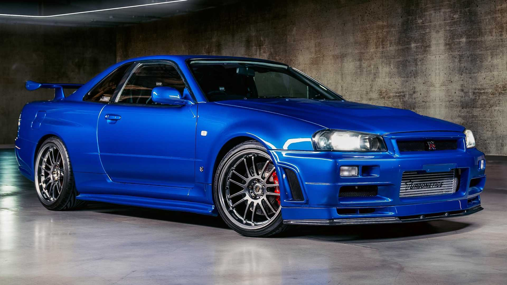
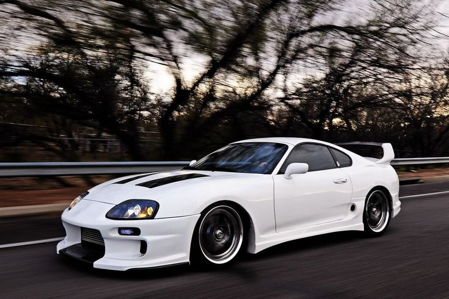

Nissan Skyline GT-R R34
Publicado el 26 de Septiembre, 2025

El Nissan Skyline GT-R R34 es uno de los autos más icónicos de Japón, famoso por su motor RB26DETT y su presencia en películas y videojuegos.
🔝 Volver arribaPublicado el 26 de Septiembre, 2025

El Nissan Skyline GT-R R34 es uno de los autos más icónicos de Japón, famoso por su motor RB26DETT y su presencia en películas y videojuegos.
🔝 Volver arribaPublicado el 20 de Septiembre, 2025

El Toyota Supra MK4 es conocido mundialmente gracias a su motor 2JZ-GTE, considerado uno de los más resistentes y potenciables del mundo.
🔝 Volver arribaPublicado el 15 de Septiembre, 2025

El Mazda RX-7 destaca por su motor rotativo Wankel y su diseño ligero, lo que lo convierte en una leyenda de los autos deportivos japoneses.
🔝 Volver arriba